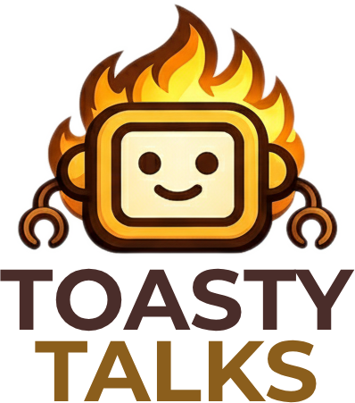
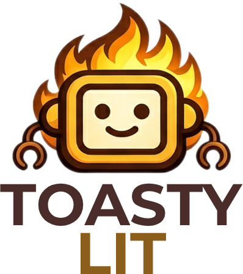

Toasty Talks
Original shows, produced with Toasty Studio.
Toasty Talks is the home of original Toasty Media productions: conversations about technology, business, culture and books, with interesting people. Every episode is planned, recorded and produced in Toasty Studio.

Flagship show
Toasty Talks & Takes
Conversations, interviews, commentary and opinions about technology, business, culture, current events and interesting people.
No podcast experience required. Personality encouraged. Auditions recorded with Toasty Studio.
Episodes
Episodes will be listed here as they are published.

Book club podcast
Toasty Lit
A book club podcast with two regular hosts and a rotating guest. Guests do not need to have read the whole book.
Before each recording, the production team prepares a concise briefing on the premise, characters, themes and discussion topics, so every guest can join the conversation with confidence. Briefings are built in Studio’s Session Planner using a reusable book club template.
Episodes
Episodes will be listed here as they are published.
Produced with Toasty Studio
The shows are made with the studio we build.
Planning, guest preparation, recording and production for every Toasty show happen in Toasty Studio, with Moxie, the AI producer, alongside the hosts. If you want to make a show of your own, the same studio is open to the beta waitlist.